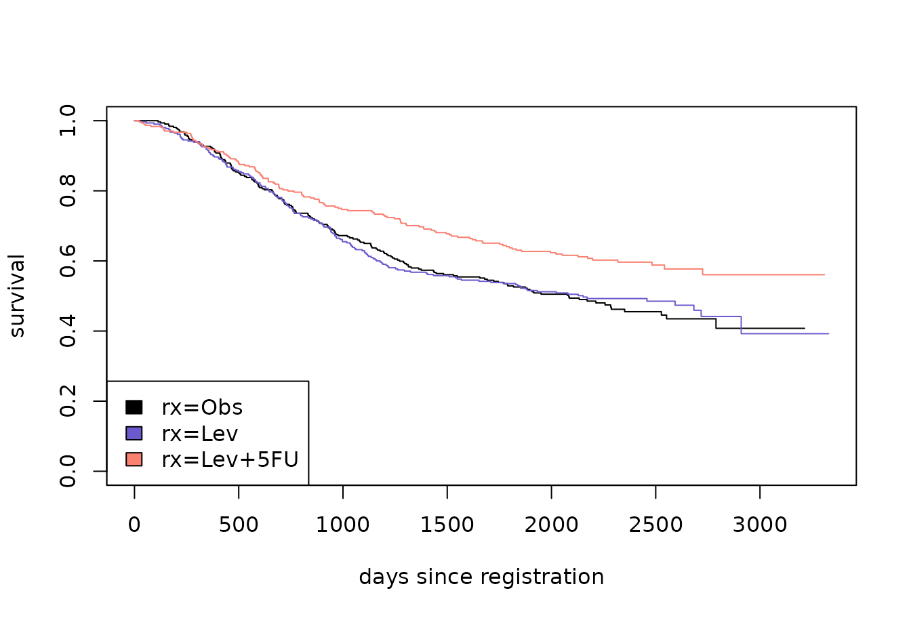
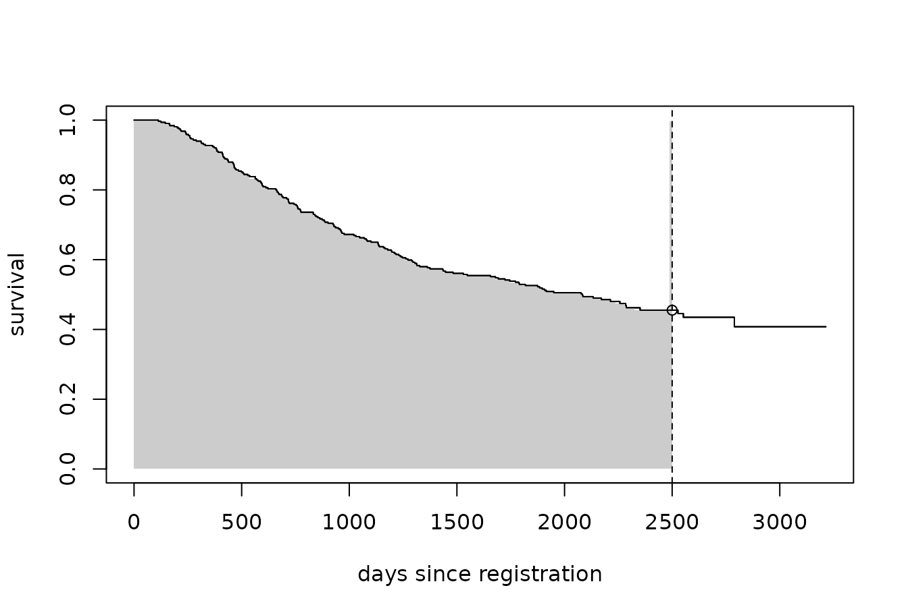
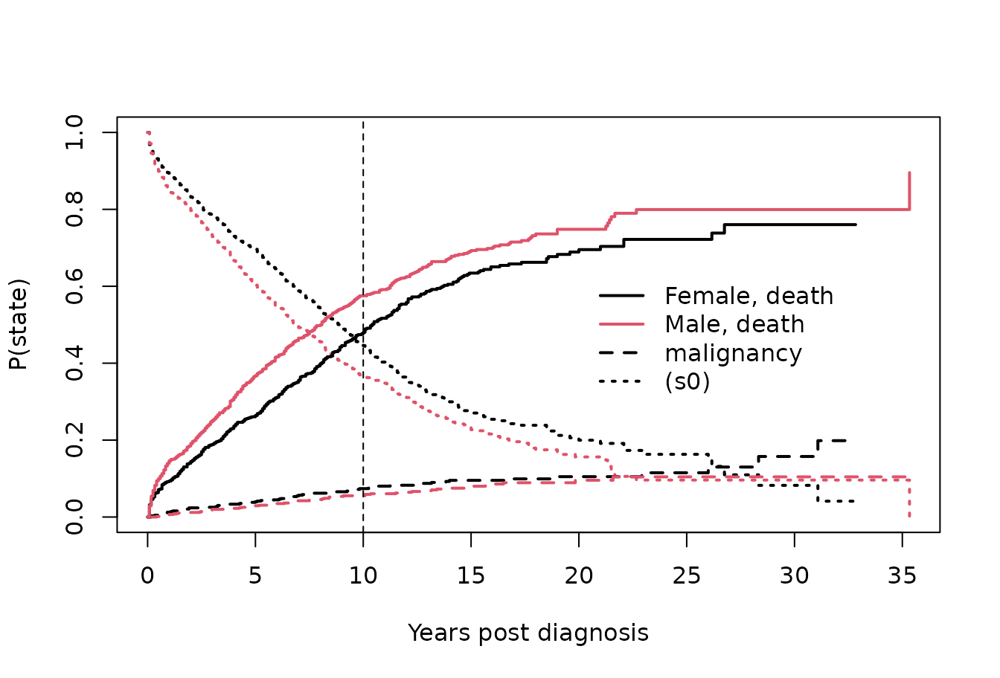

vignettes/example-analysis.Rmd
example-analysis.Rmd
library(survival)
library(eventglm)
#>
#> Attaching package: 'eventglm'
#> The following objects are masked from 'package:survival':
#>
#> colon, mgus2Our first example concerns the colon dataset, which is
included in the package:
?eventglm::colonThis is a randomized trial, so the main interest is in comparing the distributions of time to death between the three treatment arms. Let’s start with a survival curve.
sfit <- survfit(Surv(time, status) ~ rx, data = colon)
plot(sfit, col = c("black", "slateblue", "salmon"),
xlab = "days since registration", ylab = "survival")
legend("bottomleft", fill = c("black", "slateblue", "salmon"),
legend = names(sfit$strata))
As we know, hazard ratios are difficult to interpret as causal effects, even in randomized controlled trials. Better options for summarizing the effect of treatment are the survival at a particular time, or the restricted mean survival up to a given time. Let’s compare the survival at 7 years, or about 2500 days since registration.
plot(sfit[1], conf.int = FALSE, xlab = "days since registration", ylab = "survival")
seg0 <- summary(sfit[1], times = sfit[1]$time[sfit[1]$time <= 2500])
rect(c(0, seg0$time), 0, c(seg0$time, 2500), c(seg0$surv),
border = NA, col = "grey80")
lines(sfit[1], conf.int = FALSE)
abline(v = 2500, lty = 2)
points(x = 2500, y = summary(sfit[1], times = 2500)$surv)
In the figure above, we plot only the survival curve in the
observation group. The vertical dotted line is at the time of interest
(tmax = 2500 days). The open point is at the estimated survival
probability at time tmax, i.e., \(P(T >
tmax)\) and the shaded area represents the restricted mean
survival up to tmax, i.e., \(E\{\min(T,
tmax)\} = \int_0^{tmax} P(T > u) \, du\). We can estimate
these things using the survival package:
colon.sfit <- summary(sfit, times = 2500, rmean = 2500)
colon.sfit
#> Call: survfit(formula = Surv(time, status) ~ rx, data = colon)
#>
#> rx=Obs
#> time n.risk n.event survival std.err lower 95% CI
#> 2.50e+03 5.00e+01 1.65e+02 4.55e-01 2.98e-02 4.00e-01
#> upper 95% CI
#> 5.18e-01
#>
#> rx=Lev
#> time n.risk n.event survival std.err lower 95% CI
#> 2.50e+03 5.80e+01 1.57e+02 4.85e-01 2.92e-02 4.31e-01
#> upper 95% CI
#> 5.46e-01
#>
#> rx=Lev+5FU
#> time n.risk n.event survival std.err lower 95% CI
#> 2.50e+03 6.50e+01 1.21e+02 5.88e-01 2.96e-02 5.33e-01
#> upper 95% CI
#> 6.49e-01And we can now do inference using the eventglm package.
First, we fit a regression model for the cumulative incidence, or 1 -
survival:
colon.cifit <- cumincglm(Surv(time, status) ~ rx, time = 2500, data = colon)
summary(colon.cifit)
#>
#> Call:
#> cumincglm(formula = Surv(time, status) ~ rx, time = 2500, data = colon)
#>
#> Deviance Residuals:
#> Min 1Q Median 3Q Max
#> -0.5875 -0.4902 -0.3467 0.4863 2.1103
#>
#> Coefficients:
#> Estimate Std. Error z value Pr(>|z|)
#> (Intercept) 0.54345 0.02946 18.449 < 2e-16 ***
#> rxLev -0.02907 0.04173 -0.697 0.48596
#> rxLev+5FU -0.13176 0.04186 -3.148 0.00165 **
#> ---
#> Signif. codes: 0 '***' 0.001 '**' 0.01 '*' 0.05 '.' 0.1 ' ' 1
#>
#> (Dispersion parameter for quasi family taken to be 1)
#>
#> Null deviance: 253.10 on 928 degrees of freedom
#> Residual deviance: 250.15 on 926 degrees of freedom
#> AIC: NA
#>
#> Number of Fisher Scoring iterations: 2
se.ci <- sqrt(diag(vcov(colon.cifit, type = "robust")))
b.ci <- coefficients(colon.cifit)
conf.ci <- confint(colon.cifit)We find that compared to observation alone, the Levamisole alone treatment group has a -0.03 difference in the cumulative incidence of death at 2500 days, with 95% confidence interval -0.11, 0.05, while the Levamisole plus 5-FU group has a -0.13 difference in the cumulative incidence of death at 2500 days, with 95% confidence interval -0.21, -0.05. This roughly agrees with the Kaplan-Meier estimates from survfit above:
cbind(eventglm = b.ci,
survfit = c(1 - colon.sfit$surv[1],
(1 - colon.sfit$surv[2:3]) -
(1 - rep(colon.sfit$surv[1], 2))))
#> eventglm survfit
#> (Intercept) 0.54345139 0.54479221
#> rxLev -0.02907499 -0.02990601
#> rxLev+5FU -0.13175778 -0.13301654We can fit another model using the log link to obtain estimates of the log relative risks comparing the active treatment arms to the observation arm:
colon.rr <- cumincglm(Surv(time, status) ~ rx, time = 2500,
data = colon, link = "log")
br.ci <- coefficients(colon.rr)
confr.ci <- confint(colon.rr)We find that the estimated probability of death before 2500 days in
the Levamisole alone arm is 0.95 times lower compared to observation
with 95% confidence interval 0.81, 1.1 and the estimated probability of
death before 2500 days in the Levamisole+5FU arm is 0.76 times lower
compared to observation with 95% confidence interval 0.63, 0.9. If odds
ratios are of interest, then the link = "logit" option can
be used instead. Another interesting option is the
link = "cloglog": the complementary log log link for the
cumulative incidence implies proportional hazards. Thus models using the
cloglog link applied at various time points can be used to assess the
proportional hazards assumption (Perme and
Andersen 2008). Other options for link functions are probit,
inverse, \(\mu^{-2}\), square root, and
users can define custom link function. It is not immediately clear what
the interpretation of the regression coefficients would be in these
cases, but they are possible. See the stats::family help
file for more details.
Now for the restricted mean:
colon.rmfit <- rmeanglm(Surv(time, status) ~ rx, time = 2500, data = colon)
summary(colon.rmfit)
#>
#> Call:
#> rmeanglm(formula = Surv(time, status) ~ rx, time = 2500, data = colon)
#>
#> Deviance Residuals:
#> Min 1Q Median 3Q Max
#> -1839.4 -903.8 620.9 829.9 848.1
#>
#> Coefficients:
#> Estimate Std. Error z value Pr(>|z|)
#> (Intercept) 1667.403 49.949 33.382 < 2e-16 ***
#> rxLev -6.074 71.739 -0.085 0.93253
#> rxLev+5FU 194.954 70.498 2.765 0.00569 **
#> ---
#> Signif. codes: 0 '***' 0.001 '**' 0.01 '*' 0.05 '.' 0.1 ' ' 1
#>
#> (Dispersion parameter for quasi family taken to be 1)
#>
#> Null deviance: 734414066 on 928 degrees of freedom
#> Residual deviance: 726392934 on 926 degrees of freedom
#> AIC: NA
#>
#> Number of Fisher Scoring iterations: 2
se.rm <- sqrt(diag(vcov(colon.rmfit, type = "robust")))
b.rm <- coefficients(colon.rmfit)
conf.rm <- confint(colon.rmfit)We find that compared to observation alone, the Levamisole alone treatment group has a -6.07 difference in the mean time to death up to 2500 days, with 95% confidence interval -146.68, 134.53, while the Levamisole plus 5-FU group has a 194.95 difference in the mean time to death up to 2500 days, with 95% confidence interval 56.78, 333.13. Again, this roughly agrees with the Kaplan-Meier estimates from survfit above:
cbind(eventglm = b.rm,
survfit = c(colon.sfit$table[1, 5],
colon.sfit$table[2:3, 5] - colon.sfit$table[1, 5]))
#> eventglm survfit
#> (Intercept) 1667.40308 1666.948078
#> rxLev -6.07367 -5.708803
#> rxLev+5FU 194.95446 195.313754A key advantage of the regression approach is that it gives us the ability to adjust or model other covariates. In this example, since it is a randomized trial, we know that all covariates are independent of treatment assignment. However, several variables are associated with time to death, so in this case they would be called “precision variables”. We would expect that adjusting for age, or the number of positive lymph nodes (more than 4) in the above models would reduce the standard error estimates of the treatment effects, without changing the coefficient estimates. Let’s find out:
colon.ci.adj <- cumincglm(Surv(time, status) ~ rx + age + node4, time = 2500, data = colon)
colon.rm.adj <- rmeanglm(Surv(time, status) ~ rx + age + node4, time = 2500, data = colon)
summary(colon.rm.adj)
#>
#> Call:
#> rmeanglm(formula = Surv(time, status) ~ rx + age + node4, time = 2500,
#> data = colon)
#>
#> Deviance Residuals:
#> Min 1Q Median 3Q Max
#> -2035.7 -788.5 443.2 647.6 1385.7
#>
#> Coefficients:
#> Estimate Std. Error z value Pr(>|z|)
#> (Intercept) 2067.576 151.579 13.640 < 2e-16 ***
#> rxLev 3.421 67.516 0.051 0.95958
#> rxLev+5FU 185.349 67.365 2.751 0.00593 **
#> age -3.735 2.391 -1.562 0.11824
#> node4 -644.960 64.854 -9.945 < 2e-16 ***
#> ---
#> Signif. codes: 0 '***' 0.001 '**' 0.01 '*' 0.05 '.' 0.1 ' ' 1
#>
#> (Dispersion parameter for quasi family taken to be 1)
#>
#> Null deviance: 734414066 on 928 degrees of freedom
#> Residual deviance: 650039827 on 924 degrees of freedom
#> AIC: NA
#>
#> Number of Fisher Scoring iterations: 2The estimates don’t change (much) and the standard errors reduce by about 5%.
If you would like to model the survival which is equal to one minus
the cumulative incidence, it is straightforward. You can simply use the
survival = TRUE option:
cumincglm(Surv(time, status) ~ rx, time = 2500,
data = colon, survival = TRUE)
#>
#> Call: cumincglm(formula = Surv(time, status) ~ rx, time = 2500, data = colon,
#> survival = TRUE)
#>
#>
#> Model for the identity survival at time 2500
#>
#> Coefficients:
#> (Intercept) rxLev rxLev+5FU
#> 0.45655 0.02907 0.13176
#>
#> Degrees of Freedom: 928 Total (i.e. Null); 926 ResidualNow you can specify a vector of times in cumincglm to
get a model that assumes the effect of the covariate is constant over
those times.
mvtfit1 <- cumincglm(Surv(time, status) ~ rx,
time = c(500, 1000, 1500, 2000, 2500),
data = colon, survival = TRUE)
summary(mvtfit1)
#>
#> Call:
#> cumincglm(formula = Surv(time, status) ~ rx, time = c(500, 1000,
#> 1500, 2000, 2500), data = colon, survival = TRUE)
#>
#> Deviance Residuals:
#> Min 1Q Median 3Q Max
#>
#>
#> Coefficients:
#> Estimate Std. Error z value Pr(>|z|)
#> (Intercept) 0.829127 0.021793 38.046 < 2e-16 ***
#> factor(pseudo.time)1000 -0.170283 0.012340 -13.800 < 2e-16 ***
#> factor(pseudo.time)1500 -0.263039 0.014456 -18.196 < 2e-16 ***
#> factor(pseudo.time)2000 -0.314852 0.015290 -20.592 < 2e-16 ***
#> factor(pseudo.time)2500 -0.351750 0.016423 -21.419 < 2e-16 ***
#> rxLev 0.003942 0.032530 0.121 0.90355
#> rxLev+5FU 0.093737 0.031979 2.931 0.00338 **
#> ---
#> Signif. codes: 0 '***' 0.001 '**' 0.01 '*' 0.05 '.' 0.1 ' ' 1
#>
#> (Dispersion parameter for quasi family taken to be 1)
#>
#> Null deviance: 1091.5 on 4644 degrees of freedom
#> Residual deviance: 1009.4 on 4638 degrees of freedom
#> AIC: NA
#>
#> Number of Fisher Scoring iterations: 2In this model, the intercept is the survival probability in the Obs
arm at time 500 (the reference time). The terms labeled
factor(pseudo.time)t represent the change in the intercept
associated with the time t. So, for example, the survival
probability in the Obs arm at time 1000 is 0.83 + -0.17 = 0.66.
Looking at the survival curves in the figure above, the assumption of
a constant treatment effect on the survival difference scale may be
questionable. We can allow covariate effects to be time dependent by
wrapping them in the special term tve() in the right side
of the formula.
mvtfit2 <- cumincglm(Surv(time, status) ~ tve(rx),
time = c(500, 1000, 1500, 2000, 2500),
data = colon, survival = TRUE)
summary(mvtfit2)
#>
#> Call:
#> cumincglm(formula = Surv(time, status) ~ tve(rx), time = c(500,
#> 1000, 1500, 2000, 2500), data = colon, survival = TRUE)
#>
#> Deviance Residuals:
#> Min 1Q Median 3Q Max
#>
#>
#> Coefficients:
#> Estimate Std. Error z value Pr(>|z|)
#> (Intercept) 0.850710 0.020078 42.370 < 2e-16 ***
#> factor(pseudo.time)1000 -0.178401 0.021560 -8.275 < 2e-16 ***
#> factor(pseudo.time)1500 -0.289898 0.025561 -11.341 < 2e-16 ***
#> factor(pseudo.time)2000 -0.345379 0.026875 -12.851 < 2e-16 ***
#> factor(pseudo.time)2500 -0.394161 0.028857 -13.659 < 2e-16 ***
#> factor(pseudo.time)500:rxLev 0.004138 0.028347 0.146 0.88395
#> factor(pseudo.time)1000:rxLev -0.017500 0.037805 -0.463 0.64343
#> factor(pseudo.time)1500:rxLev -0.002754 0.039739 -0.069 0.94474
#> factor(pseudo.time)2000:rxLev 0.006751 0.040132 0.168 0.86641
#> factor(pseudo.time)2500:rxLev 0.029075 0.041596 0.699 0.48456
#> factor(pseudo.time)500:rxLev+5FU 0.027581 0.027476 1.004 0.31546
#> factor(pseudo.time)1000:rxLev+5FU 0.074455 0.036360 2.048 0.04059 *
#> factor(pseudo.time)1500:rxLev+5FU 0.116689 0.038753 3.011 0.00260 **
#> factor(pseudo.time)2000:rxLev+5FU 0.118203 0.039667 2.980 0.00288 **
#> factor(pseudo.time)2500:rxLev+5FU 0.131758 0.041722 3.158 0.00159 **
#> ---
#> Signif. codes: 0 '***' 0.001 '**' 0.01 '*' 0.05 '.' 0.1 ' ' 1
#>
#> (Dispersion parameter for quasi family taken to be 1)
#>
#> Null deviance: 1091.5 on 4644 degrees of freedom
#> Residual deviance: 1007.9 on 4630 degrees of freedom
#> AIC: NA
#>
#> Number of Fisher Scoring iterations: 2Now the coefficients labeled
factor(pseudo.time)t:Covariate represent the covariate
effect at time t. So, for example, the difference in
survival probabilities of Levamisole plus 5-FU to Observation at time
1500 is
round(summary(mvtfit2)$coefficients[13,, drop = FALSE],2)
#> Estimate Std. Error z value Pr(>|z|)
#> factor(pseudo.time)1500:rxLev+5FU 0.12 0.04 3.01 0Compare with the estimate from survfit:
The key advantage of the regression approach is that we can adjust
for covariates, do inference directly, and have more flexible models.
The tve term allows you to have a mix of time-varying and
time-constant effects. Just apply it to any covariate that you want to
be time-varying.
By default, we assume that time to censoring is independent of the
time to the event, and of all covariates in the model. This is more
restrictive than parametric survival models, or Cox regression, which
only assumes that censoring time is conditionally independent of event
time given the covariates in the model. We provide several options to
relax that assumption using the model.censoring and
formula.censoring options. The first is to compute
stratified pseudo observations, which assumes that the censoring is
independent given a set of categorical covariates:
colon.ci.cen1 <- cumincglm(Surv(time, status) ~ rx + age + node4, time = 2500,
data = colon, model.censoring = "stratified",
formula.censoring = ~ rx)Next, we can assume that the time to censoring follows a Cox model given a set of covariates. By default, the same covariate formula (right hand side) as the main model is used, but any formula can be specified. We can also use Aalens additive hazards model instead of a Cox model for the censoring distribution. Then inverse probability of censoring weighted pseudo observations are used (Overgaard, Parner, and Pedersen 2019). According to our simulation study, the stratified option works quite well even when the censoring model is misspecified, and the Aalen additive model tends to work better than the Cox model.
colon.ci.cen2 <- cumincglm(Surv(time, status) ~ rx + age + node4, time = 2500,
data = colon, model.censoring = "coxph",
formula.censoring = ~ rx + age + node4)
colon.ci.cen3 <- cumincglm(Surv(time, status) ~ rx + age + node4, time = 2500,
data = colon, model.censoring = "aareg",
formula.censoring = ~ rx + age + node4)
round(cbind("indep" = coef(colon.ci.adj),
"strat" = coef(colon.ci.cen1),
"coxipcw" = coef(colon.ci.cen2),
"aalenipcw" = coef(colon.ci.cen3)), 3)
#> indep strat coxipcw aalenipcw
#> (Intercept) 0.318 0.314 0.535 0.596
#> rxLev -0.034 -0.035 -0.034 -0.036
#> rxLev+5FU -0.127 -0.128 -0.127 -0.127
#> age 0.002 0.002 0.002 0.002
#> node4 0.332 0.334 0.335 0.334In these models, the IPCW weights are returned in the element called “ipcw.weights”. If there are multiple time points, this will be a matrix with one column per time point.
colon.ci.cen2b <- cumincglm(Surv(time, status) ~ rx + age + node4,
time = c(500, 1000, 2500),
data = colon, model.censoring = "coxph",
formula.censoring = ~ rx + age + node4)
head(colon.ci.cen2b$ipcw.weights)
#> [,1] [,2] [,3]
#> [1,] 0.9988156 0.9988156 0.9936251
#> [2,] 0.9988733 0.9988733 0.3867807
#> [3,] 0.9983923 0.9983923 0.9983923
#> [4,] 1.0000000 1.0000000 1.0000000
#> [5,] 0.9984112 0.9984112 0.9984112
#> [6,] 0.9987135 0.9987135 0.9911426
summary(colon.ci.cen2b$ipcw.weights)
#> V1 V2 V3
#> Min. :0.9983 Min. :0.9983 Min. :0.2702
#> 1st Qu.:0.9987 1st Qu.:0.9987 1st Qu.:0.4832
#> Median :0.9988 Median :0.9988 Median :0.9094
#> Mean :0.9989 Mean :0.9989 Mean :0.7680
#> 3rd Qu.:0.9989 3rd Qu.:0.9989 3rd Qu.:0.9988
#> Max. :1.0000 Max. :1.0000 Max. :1.0000Our next example involves the mgus2 dataset, included in
the package:
## ?mgus2
head(mgus2)
#> id age sex dxyr hgb creat mspike ptime pstat futime death etime event
#> 1 1 88 F 1981 13.1 1.3 0.5 30 0 30 1 30 death
#> 2 2 78 F 1968 11.5 1.2 2.0 25 0 25 1 25 death
#> 3 3 94 M 1980 10.5 1.5 2.6 46 0 46 1 46 death
#> 4 4 68 M 1977 15.2 1.2 1.2 92 0 92 1 92 death
#> 5 5 90 F 1973 10.7 0.8 1.0 8 0 8 1 8 death
#> 6 6 90 M 1990 12.9 1.0 0.5 4 0 4 1 4 deathThis dataset has a number of covariates, and the time until progression to plasma cell malignancy (PCM), or death. Here the event PCM is of primary interest, with death being a competing event. The data are described and analyzed in the survival vignette (section 2.3.2):
crfit <- survfit(Surv(etime, event) ~ sex, eventglm::mgus2)
summary(crfit, times = 120)
#> Call: survfit(formula = Surv(etime, event) ~ sex, data = eventglm::mgus2)
#>
#> sex=F
#> time n.risk n.event P((s0)) P(pcm) P(death)
#> 120.0000 214.0000 331.0000 0.4456 0.0739 0.4805
#>
#> sex=M
#> time n.risk n.event P((s0)) P(pcm) P(death)
#> 120.0000 210.0000 450.0000 0.3695 0.0553 0.5752
print(crfit, rmean = 120)
#> Call: survfit(formula = Surv(etime, event) ~ sex, data = eventglm::mgus2)
#>
#> n nevent rmean*
#> sex=F, (s0) 631 0 82.983485
#> sex=M, (s0) 753 0 74.808346
#> sex=F, pcm 631 59 4.794595
#> sex=M, pcm 753 56 3.501305
#> sex=F, death 631 370 32.221921
#> sex=M, death 753 490 41.690349
#> *restricted mean time in state (max time = 120 )
plot(crfit, col=1:2, noplot="",
lty=c(3,3,2,2,1,1), lwd=2, xscale=12,
xlab="Years post diagnosis", ylab="P(state)")
legend(240, .65, c("Female, death", "Male, death", "malignancy", "(s0)"),
lty=c(1,1,2,3), col=c(1,2,1,1), bty='n', lwd=2)
abline(v = 120, lty = 2)
We can get similar estimates for the cumulative incidence of pcm at
10 years and the expected lifetime lost due to pcm up to 10 years with
similar commands as above. Note the cause option to specify
the cause of interest.
mgfitci <- cumincglm(Surv(etime, event) ~ sex, cause = "pcm", time = 120,
data = mgus2)
summary(mgfitci)
#>
#> Call:
#> cumincglm(formula = Surv(etime, event) ~ sex, time = 120, cause = "pcm",
#> data = mgus2)
#>
#> Deviance Residuals:
#> Min 1Q Median 3Q Max
#> -0.08163 -0.07447 -0.06306 -0.05536 1.23923
#>
#> Coefficients:
#> Estimate Std. Error z value Pr(>|z|)
#> (Intercept) 0.07383 0.01086 6.800 1.04e-11 ***
#> sexM -0.01857 0.01384 -1.342 0.18
#> ---
#> Signif. codes: 0 '***' 0.001 '**' 0.01 '*' 0.05 '.' 0.1 ' ' 1
#>
#> (Dispersion parameter for quasi family taken to be 1)
#>
#> Null deviance: 88.507 on 1383 degrees of freedom
#> Residual deviance: 88.388 on 1382 degrees of freedom
#> AIC: NA
#>
#> Number of Fisher Scoring iterations: 2
mgfitrmean <- rmeanglm(Surv(etime, event) ~ sex, cause = "pcm", time = 120,
data = mgus2)
summary(mgfitrmean)
#>
#> Call:
#> rmeanglm(formula = Surv(etime, event) ~ sex, time = 120, cause = "pcm",
#> data = mgus2)
#>
#> Deviance Residuals:
#> Min 1Q Median 3Q Max
#> -4.971 -4.863 -3.678 -3.508 113.292
#>
#> Coefficients:
#> Estimate Std. Error z value Pr(>|z|)
#> (Intercept) 4.7926 0.7883 6.080 1.2e-09 ***
#> sexM -1.2929 0.9902 -1.306 0.192
#> ---
#> Signif. codes: 0 '***' 0.001 '**' 0.01 '*' 0.05 '.' 0.1 ' ' 1
#>
#> (Dispersion parameter for quasi family taken to be 1)
#>
#> Null deviance: 450225 on 1383 degrees of freedom
#> Residual deviance: 449652 on 1382 degrees of freedom
#> AIC: NA
#>
#> Number of Fisher Scoring iterations: 2Sex may be an important predictor of time to pcm, what about the other variables?
mgfitci2 <- cumincglm(Surv(etime, event) ~ sex + age + hgb, cause = "pcm",
time = 120, data = mgus2)
mgfitrmean2 <- rmeanglm(Surv(etime, event) ~ sex + age + hgb, cause = "pcm",
time = 120, data = mgus2)
summary(mgfitrmean2)
#>
#> Call:
#> rmeanglm(formula = Surv(etime, event) ~ sex + age + hgb, time = 120,
#> cause = "pcm", data = mgus2)
#>
#> Deviance Residuals:
#> Min 1Q Median 3Q Max
#> -7.081 -4.795 -4.034 -3.278 112.970
#>
#> Coefficients:
#> Estimate Std. Error z value Pr(>|z|)
#> (Intercept) 3.98253 3.87360 1.028 0.304
#> sexM -0.98992 0.99168 -0.998 0.318
#> age 0.04466 0.02941 1.518 0.129
#> hgb -0.18754 0.25091 -0.747 0.455
#>
#> (Dispersion parameter for quasi family taken to be 1)
#>
#> Null deviance: 448531 on 1370 degrees of freedom
#> Residual deviance: 447319 on 1367 degrees of freedom
#> (13 observations deleted due to missingness)
#> AIC: NA
#>
#> Number of Fisher Scoring iterations: 2The objects returned by cumincglm and
rmeanglm inherit from glm, so many methods are
available. First, the vcov function has several options for
calculation of the estimated variance of the estimated regression
parameters. By default, the robust variance estimates are
used, based on the Huber-White estimator. Other options are naive, and
corrected, which are the corrected estimators suggested by Overgaard et al. (2017) which are based on a
second order Von-Mises expansion. We can also use the bootstrap. This
recalculated the pseudo-observations every time, but it is still pretty
fast because of the C code. Let’s compare:
nboot <- 100 # use a bigger number for real
bootests <- matrix(NA, nrow = nboot, ncol = 4)
for(i in 1:nboot) {
mgus.b <- mgus2[sample(1:nrow(mgus2), replace = TRUE), ]
mgfitrmean.b <- rmeanglm(Surv(etime, event) ~ sex + age + hgb, cause = "pcm",
time = 120, data = mgus.b)
bootests[i,] <- coefficients(mgfitrmean.b)
}
se.boot <- sqrt(diag(cov(bootests)))
knitr::kable(cbind(se.boot = se.boot,
se.robust = sqrt(diag(vcov(mgfitrmean2))),
#se.corrected = sqrt(diag(vcov(mgfitrmean2, type = "corrected"))),
se.naive = sqrt(diag(vcov(mgfitrmean2, type = "naive")))), digits = 3)| se.boot | se.robust | se.naive | |
|---|---|---|---|
| (Intercept) | 3.922 | 3.874 | 4.749 |
| sexM | 0.869 | 0.992 | 1.012 |
| age | 0.029 | 0.029 | 0.041 |
| hgb | 0.245 | 0.251 | 0.253 |
The corrected estimator fails pretty often, because it doesn’t handle ties, and the benefits are negligible, and thus may be removed from the package in the future.
Residuals also work, using the scaling factor suggested by Perme and Andersen (2008), as do predictions. Predicted restricted means give a possible method to predict individual event times, while the predicted cumulative incidence should be probabilities. Note that with the identity link, the predicted cumulative incidence is not guaranteed to be between 0 and 1.
mgus2$prob.pcm10 <- predict(mgfitci2, newdata = mgus2)
mgus2$pseudo.ci <- mgfitci$y
summary(mgus2$prob.pcm10)
#> Min. 1st Qu. Median Mean 3rd Qu. Max. NA's
#> 0.05169 0.05559 0.05695 0.06348 0.07297 0.07522 13
cutps <- quantile(mgus2$prob.pcm10, seq(.1, .9, by = .1), na.rm = TRUE)
mgus2$prob.cut <- cut(mgus2$prob.pcm10,
cutps)
pred.p <- cutps[-length(cutps)] + diff(cutps)
obs.p <- c(by(mgus2$pseudo.ci, mgus2$prob.cut, mean))
plot(obs.p ~ pred.p, xlab = "predicted", ylab = "observed")
abline(0, 1)Following Professor Paul Lambert’s example here: https://pclambert.net/software/stpp/using_stpp/ , let’s load the datasets:
library(data.table)
# from https://pclambert.net/data/colon.dta
colon2 <- rio::import(system.file("extdata", "colon.dta", package = "eventglm"))
colon2$surv_mm_trunc <- ifelse(colon2$surv_mm > 120.5, 120.5, colon2$surv_mm)
colon2$death <- colon2$status %in% c(1, 2)
colon2$death[colon2$surv_mm > colon2$surv_mm_trunc] <- 0
# from https://pclambert.net/data/popmort.dta
lifetab <- data.table(rio::import(system.file("extdata", "popmort.dta", package = "eventglm")))Now we will estimate the marginal relative survival using the approach described in Pavlič and Pohar Perme (2019), which is based on the estimator:
\[ RS(t) = n^{-1}\sum_{i = 1}^n\frac{PO_i(t)}{S_{P}(t | D)}, \]
where \(S_{P}(t | D)\) is the
survival probability based on the life tables for the demographics \(D\) of patient \(i\), and \(PO_i(t)\) are the pseudo observations for
time \(t\). We get the survival
probability by merging with the life table estimates, and the pseudo
observations from our package. The prob from the life
tables is the probability of surviving one year, so to get the
probability of surviving 5 and 10 years, we need to calculate the
cumulative product estimates.
lifetab[, prob.5 := prod(lifetab[`_age` %in% .BY[["_age"]]:(.BY[["_age"]]+4) &
`_year` %in% .BY[["_year"]]:(.BY[["_year"]]+4) &
`_year` == .BY[["_year"]] - .BY[["_age"]] + `_age` &
sex == .BY[["sex"]] ]$prob, na.rm = TRUE),
by = c("sex", "_year", "_age")]
lifetab[, prob.10 := prod(lifetab[`_age` %in% .BY[["_age"]]:(.BY[["_age"]]+9) &
`_year` %in% .BY[["_year"]]:(.BY[["_year"]]+9) &
`_year` == .BY[["_year"]] - .BY[["_age"]] + `_age` &
sex == .BY[["sex"]] ]$prob, na.rm = TRUE),
by = c("sex", "_year", "_age")]
colon2 <- merge(colon2, lifetab,
by.x = c("sex", "yydx", "age"),
by.y = c("sex", "_year", "_age"), all.x = TRUE, all.y = FALSE)
fit1 <- cumincglm(survival::Surv(surv_mm_trunc, death) ~ 1, data = colon2, time = 1 * 12)
fit5 <- cumincglm(survival::Surv(surv_mm_trunc, death) ~ 1, data = colon2, time = 5 * 12)
fit10 <- cumincglm(survival::Surv(surv_mm_trunc, death) ~ 1, data = colon2, time = 10 * 12)
colon2$po_1 <- 1 - fit1$y
colon2$po_5 <- 1 - fit5$y
colon2$po_10 <- 1 - fit10$y
knitr::kable(cbind(time = c(1, 5, 10),
relsurv.pseudo = with(colon2,
c(mean(po_1 / prob),
mean(po_5 / prob.5),
mean(po_10 / prob.10)),
),
relsurv.pohar = c(0.682, 0.479, 0.441)), digits = 3)| time | relsurv.pseudo | relsurv.pohar |
|---|---|---|
| 1 | 0.677 | 0.682 |
| 5 | 0.477 | 0.479 |
| 10 | 0.411 | 0.441 |
They are pretty close to those computed using the Pohar Perme estimator reported by Prof Lambert.
Parner, Andersen, and Overgaard (2020)
describe how to fit regression models with pseudo-observations that
account for case-cohort sampling. The basic idea is weighted estimating
equations, which we can implement easily with the weights
argument that gets passed to glm.fit. First let’s create a
case-cohort sample of the colon2 dataset by sampling the
cancer deaths (status == 1) with probability 0.8, and a
random subcohort with probability 0.1.
colon2$status2 <- factor(ifelse(colon2$status == 4, 0, colon2$status),
labels = c("censored", "cancer death", "other death"))
subc <- rbinom(nrow(colon2), size = 1, p = .2)
samp.ind <- subc + (1 - subc) * (colon2$status == 1) * rbinom(nrow(colon2), size = 1, p = .9)
colon.cc <- colon2[as.logical(samp.ind), ]
colon.cc$samp.wt <- 1 / ifelse(colon.cc$status == 1, .2 + .8 * .9, .2)Now, the weighted regression model should give similar results as the unweighted one in the full sample:
cfit.cc <- cumincglm(Surv(surv_mm, status2) ~ age + sex + factor(subsite),
cause = "cancer death", time = 5 * 12, data = colon.cc,
weights = samp.wt)
cfit.full <- cumincglm(Surv(surv_mm, status2) ~ age + sex + factor(subsite),
cause = "cancer death", time = 5 * 12, data = colon2)
knitr::kable(cbind(casecohort = coefficients(cfit.cc),
fullsamp = coefficients(cfit.full)), digits = 2)| casecohort | fullsamp | |
|---|---|---|
| (Intercept) | 0.23 | 0.21 |
| age | 0.00 | 0.00 |
| sex | -0.01 | 0.00 |
| factor(subsite)2 | 0.07 | 0.06 |
| factor(subsite)3 | -0.01 | 0.00 |
| factor(subsite)4 | -0.01 | 0.00 |